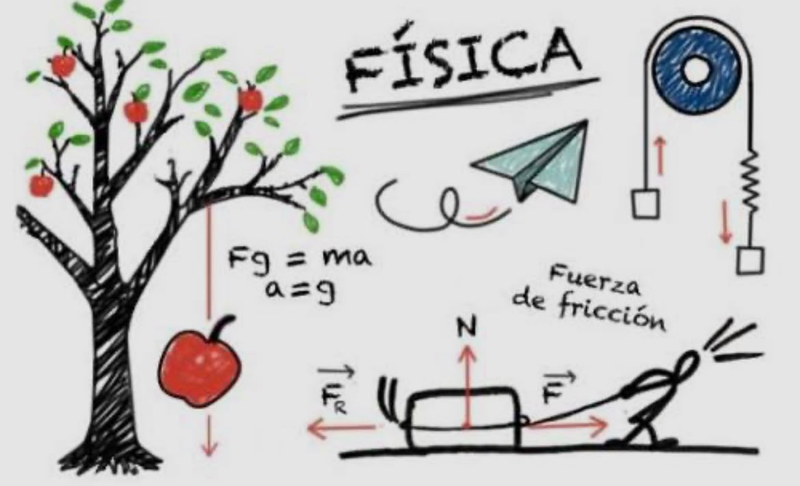

ÁREA 01
Físico-matemático
Esta área se enfoca en las matemáticas, la física y los fenómenos naturales. Desarrolla el razonamiento lógico, el análisis y la resolución de problemas.
Explora las áreas de preparación académica del TEBAEV Hueyapan de Ocampo y conoce las opciones que forman parte de tu trayectoria educativa.
Conoce las cuatro áreas propedéuticas y descubre los conocimientos que puedes desarrollar en cada una.

Esta área se enfoca en las matemáticas, la física y los fenómenos naturales. Desarrolla el razonamiento lógico, el análisis y la resolución de problemas.
Aborda temas relacionados con la economía, la administración y los negocios. Favorece la organización y la toma de decisiones.
Se relaciona con el estudio de los seres vivos, la química, el cuerpo humano y los procesos naturales. Promueve el interés por la ciencia y la salud.
Estudia al ser humano, su comportamiento, la sociedad, la cultura y las relaciones sociales. Fomenta el pensamiento crítico y la comunicación.